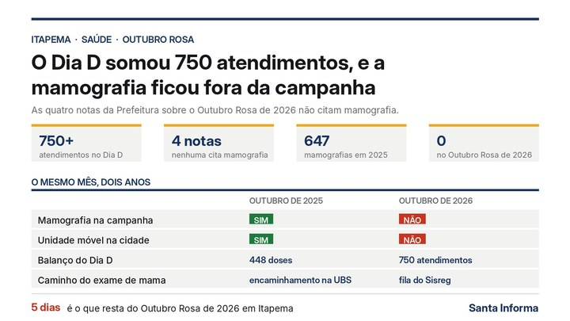

Itapema · Saúde
Itapema · SaúdeItapema publica 282 crianças atendidas no CAP-TEA e nenhum número de quem espera, e uma indicação na Câmara pede fila à vista em quatro programas
O mesmo buraco de dado, em outro serviço de saúde da cidade.
A Prefeitura de Itapema divulgou nesta terça, 27 de outubro, que 90 pessoas fizeram cirurgia de catarata no Hospital Municipal Santo Antônio ao longo do mês. É o primeiro número de catarata que a cidade publica desde 29 de agosto de 2025, ou seja, 424 dias atrás, conta nossa. Juntamos as doze notas que a Prefeitura publicou sobre o assunto de 2019 para cá e abrimos uma a uma: todas falam em reduzir a fila, e nenhuma diz de que tamanho ela é.
Em 30 segundos · Modo de Leitura, formato original Santa Informa
A Prefeitura de Itapema publicou uma nota nesta terça, 27 de outubro.
Diz que 90 pessoas fizeram cirurgia de catarata no mês.
No Hospital Municipal Santo Antônio, no Bairro Casa Branca.
Os pacientes passam por triagem antes.
O caminho começa na UBS do bairro.
Lá o paciente é avaliado e encaminhado.
A nota é assinada pelo secretário de Saúde, Adriano Pivotto.
Ele diz que a cidade está atendendo quem aguarda na fila.
Esse é o primeiro número de catarata publicado em 2026.
O anterior saiu em 29 de agosto de 2025.
São 424 dias entre um e outro, conta nossa.
Fomos atrás de tudo que a Prefeitura já publicou sobre catarata.
Achamos doze notas, de 2019 até hoje.
Abrimos as doze, uma a uma.
Seis delas trazem número de cirurgia feita no hospital da cidade.
21 de janeiro de 2025: cerca de 100 pacientes.
7 de fevereiro de 2025: 100 pacientes.
31 de março de 2025: mais 100 pacientes.
23 de maio de 2025: 115 cirurgias de catarata.
21 de julho de 2025: 60 cirurgias de catarata.
28 de agosto de 2025: 79 atendidos no dia.
Desses 79, 54 foram catarata e 25 foram capsulotomia.
A capsulotomia é a limpeza da lente implantada depois da cirurgia.
Somando só a catarata, dá 529 em 2025.
Com as 90 de agora, 619 desde janeiro de 2025.
A soma é nossa, sobre os números das notas.
Antes de 2025 era diferente.
A cirurgia era feita em Penha, em parceria com o Estado.
O morador de Itapema tinha que ir até lá.
O primeiro mutirão no hospital da cidade foi em 21 de janeiro de 2025.
Faz 644 dias, conta nossa.
Em outubro de 2019 a Prefeitura falava em outro patamar.
Dizia que, desde 2017, já eram mais de 700 procedimentos.
E que não havia paciente com longa espera.
No primeiro ano do hospital novo foram 2.912 cirurgias no total.
A conta é da própria Prefeitura, de setembro de 2025.
Pelo que ela mesma anunciou, pelo menos 529 eram de catarata.
Isso é quase uma em cada cinco.
O que falta em todas as notas é um número só.
Quantas pessoas estão na fila esperando.
Nenhuma das doze traz esse dado.
A nota de agora também não abre as 90.
Não diz quantas foram catarata e quantas foram outro procedimento.
Em agosto de 2025, quando abriu, um terço não era catarata.
Quem precisa do exame procura a UBS do bairro.
O telefone que a Secretaria divulgou em maio de 2025 é (47) 3267-1522.
Poder PúblicoPublicada em Redação Santa Informa
![Gráfico de barras com o rótulo Itapema, saúde, cirurgia de catarata e o título todo número de catarata que a Prefeitura de Itapema publicou desde que o mutirão virou do município. Sete barras trazem 100 em 21 de janeiro de 2025, 100 em 7 de fevereiro, 100 em 31 de março, 115 em 23 de maio, 60 em 21 de julho, 54 em 28 de agosto e 90 em outubro de 2026, esta última em vermelho. Entre a barra de agosto de 2025 e a de outubro de 2026, uma marca vermelha indica 424 dias sem dado. Sob a barra de 28 de agosto, a observação de que dos 79 atendidos no dia, 25 foram capsulotomia. No rodapé, a fonte: notas da Prefeitura de Itapema e levantamento do Santa Informa.](imagens/webp/ilustracao-m336.webp)
A Prefeitura de Itapema publicou nesta terça, 27 de outubro, que 90 pessoas fizeram cirurgia de catarata no Hospital Municipal Santo Antônio ao longo do mês. É o primeiro número de catarata que a cidade divulga desde 29 de agosto de 2025, 424 dias atrás, conta nossa. Fomos atrás de tudo que a Prefeitura já publicou sobre o assunto, achamos doze notas de 2019 para cá e abrimos as doze: todas falam em reduzir a fila, e nenhuma diz de que tamanho ela é.
Segundo a Secretaria de Saúde, os pacientes passaram por triagem antes e foram encaminhados para o procedimento. O caminho começa na Unidade Básica de Saúde do bairro. A nota diz que, desde 2025, a cirurgia é feita no próprio hospital e que, além dela, o serviço também faz pterígio e capsulotomia todo mês. O secretário de Saúde, Adriano Pivotto, afirma que a cidade está "ampliando o acesso aos cuidados oftalmológicos e atendendo as pessoas que aguardam na fila".
Seis notas trazem número de cirurgia feita no hospital da cidade, e é a primeira vez que elas aparecem lado a lado. Foram cerca de 100 pacientes em 21 de janeiro de 2025, 100 em 7 de fevereiro, mais 100 em 31 de março, 115 em 23 de maio e 60 em 21 de julho. Em 28 de agosto de 2025 foram 79 atendidos no dia, e essa é a única vez em que a Prefeitura abriu a conta: 54 de catarata e 25 de capsulotomia, que é a limpeza da lente implantada depois da cirurgia. Somando só a catarata, dá 529 em 2025. Com as 90 de agora, são 619 desde janeiro do ano passado. As somas são nossas, sobre os números das notas.
Até 2022 o morador de Itapema fazia a cirurgia em Penha, em parceria com o Governo do Estado, e precisava se deslocar. O primeiro mutirão no hospital da cidade foi em 21 de janeiro de 2025, 644 dias atrás, conta nossa. Em outubro de 2019 a Prefeitura dizia que, desde 2017, já eram mais de 700 procedimentos e que não havia paciente com longa espera. No balanço do primeiro ano do hospital novo, de setembro de 2025, a cidade contou 2.912 cirurgias de todas as especialidades em doze meses. Pelo que ela mesma anunciou no período, pelo menos 529 eram de catarata, quase uma em cada cinco.
Quem tem catarata ou suspeita dela procura a UBS do bairro, passa por avaliação e sai de lá com encaminhamento para a consulta oftalmológica. É nessa consulta que vem a triagem para a cirurgia. Não há inscrição por site nem data de corte. O telefone que a Secretaria de Saúde divulgou em maio de 2025 para informações sobre os mutirões é o (47) 3267-1522.
O resumo de 30 segundos está no topo e a versão completa é o texto acima. Aqui ficam as três leituras da casa sobre o mesmo assunto.
Clara, a otimista
Noventa pessoas voltaram a enxergar direito em um mês, na cidade onde moram, sem pegar estrada. Isso é grande e merece ser dito com todas as letras. Quem fez catarata em Itapema até 2022 tinha que ir até Penha, de ônibus fretado, sair cedo e voltar tarde, muitas vezes com mais de 70 anos nas costas. Hoje a pessoa faz o exame na UBS do bairro e opera a quinze minutos de casa.
E tem outra coisa boa nessa série que a gente montou: ela existe. A Prefeitura publicou número em janeiro, fevereiro, março, maio, julho e agosto de 2025, e publicou de novo agora. São seis anos de notas sobre o mesmo serviço, com data e quantidade, abertas para qualquer morador conferir. Muita cidade desse tamanho não publica nada. Pôr o número no ar é o primeiro passo, e Itapema já deu esse. O segundo, que é dizer quantos ainda esperam, cabe na mesma nota.
Seu Prudêncio, o criterioso
Merece atenção o intervalo. Entre 29 de agosto de 2025 e esta terça são 424 dias sem número publicado, conta nossa, num serviço que a própria nota descreve como mensal. Não quer dizer que o mutirão parou: quer dizer que não há como saber. Quando o dado some por mais de um ano e volta sem explicação do intervalo, quem acompanha fica sem régua.
Vale acompanhar também a forma de contar. Em agosto de 2025 a Prefeitura informou 79 atendidos e abriu: 54 de catarata e 25 de capsulotomia. Foi a única vez. As outras notas dão um número só, e a de agora cita pterígio e capsulotomia no parágrafo seguinte ao das 90. São procedimentos diferentes, com tempo de sala e custo diferentes, e misturá-los num total atrapalha a comparação entre um mês e outro. Uma sugestão útil: manter o padrão de agosto, que a casa já sabe fazer, e informar na mesma linha quantas pessoas seguem aguardando. São dois campos a mais numa nota que já existe.
Dito isso, o conjunto é bom e o caminho está certo. Trazer a cirurgia para o hospital do município tirou o deslocamento a Penha, encurtou o pós-operatório e deixou o acompanhamento na mão da própria rede. Pelos números das notas são pelo menos 619 cirurgias desde janeiro de 2025, soma nossa, num serviço que antes dependia de agenda de fora. Isso é estrutura funcionando, e com dois campos a mais na nota passa a ser também estrutura verificável.
Caco, o sarcástico
Quatrocentos e vinte e quatro dias sem notícia de um serviço que acontece todo mês. O mutirão é mensal, a nota é anual. Tem gente que escreve menos carta para a mãe.
E repare na elegância da conta. Toda nota desde 2019 avisa que a fila está diminuindo. Doze notas, sete anos, três secretários, e a fila segue diminuindo com um entusiasmo admirável, sem que ninguém nunca tenha dito de quanto para quanto. É fila quântica: encolhe quando observada e some quando medida.
Reclamação registrada. Mas tá bom porque é progresso: noventa vizinhos enxergando melhor em outubro, operados aqui mesmo, sem a excursão das seis da manhã para Penha. Isso vale muito mais que um parágrafo bem escrito. Só falta o número da fila, que é a única parte da história que ainda está embaçada.
Fontes: O número de 90 pessoas, o nome do hospital, a triagem prévia, a menção a pterígio e capsulotomia e a fala do secretário Adriano Pivotto estão na nota Itapema realiza cirurgias de catarata e contempla 90 pessoas em outubro, da Prefeitura de Itapema, publicada em 27 de outubro de 2026 e aberta por nós na mesma data. A série de números vem de seis notas da mesma Prefeitura, todas abertas por nós em 27 de outubro: Saúde promove o primeiro mutirão de cirurgias de catarata no Hospital Municipal Santo Antônio (21/01/2025, cerca de 100 pacientes), Itapema realiza mutirão de cirurgias de catarata no Hospital Municipal (07/02/2025, 100), Cirurgias de catarata beneficiam mais 100 pacientes no Hospital Municipal de Itapema (31/03/2025, mais 100), Itapema avança nos atendimentos especializados e cirurgias (23/05/2025, 115, e também a origem do telefone (47) 3267-1522), Itapema intensifica mutirões de cirurgias e consultas no Hospital Santo Antônio (21/07/2025, 60) e Itapema realiza mutirão de cirurgias de catarata e beneficia mais de 70 pacientes (29/08/2025, sobre o mutirão de 28/08, com a abertura de 54 catarata e 25 capsulotomia). O período em que a cirurgia era feita em Penha, em parceria com o Governo do Estado, e o total de mais de 700 procedimentos desde 2017 estão em Mais de 140 pacientes já foram contemplados com cirurgia de catarata em Itapema (03/05/2019), Mais 70 pacientes foram contemplados com cirurgia de catarata (29/10/2019), Mais de 120 pacientes foram convocados para mutirão de cirurgia de catarata (29/01/2021) e Mais 60 pacientes foram contemplados com cirurgia de catarata (17/02/2022). O anúncio do primeiro mutirão no hospital está em Itapema realiza primeiro mutirão de cirurgias de catarata no Hospital Municipal (20/01/2025). As 2.912 cirurgias do primeiro ano do hospital novo estão em Novo Hospital Municipal Santo Antônio completa um ano com mais de 80 mil atendimentos (01/09/2025). Essas doze notas são as que a busca do site da Prefeitura devolve para catarata, cirurgias e oftalmologia, e foram todas abertas por nós em 27 de outubro de 2026. Os intervalos de 424 dias e 644 dias e as somas de 529 e 619 cirurgias são contas nossas sobre as datas e os números dessas notas. O gráfico do topo foi montado por nós com esses mesmos dados. As quatro fotos que a Prefeitura publicou junto com a nota desta terça mostram pacientes identificáveis em corredor de hospital, e por isso não foram usadas: a regra da casa não expõe rosto de pessoa comum, mesmo quando a foto vem de órgão público.
Itapema · SaúdeO mesmo buraco de dado, em outro serviço de saúde da cidade.

Itapema · SaúdeOutra contagem feita abrindo nota por nota da Prefeitura.
 Itapema · Saúde
Itapema · SaúdeO mesmo hospital que hoje faz a catarata, quando ganhou a UTI.